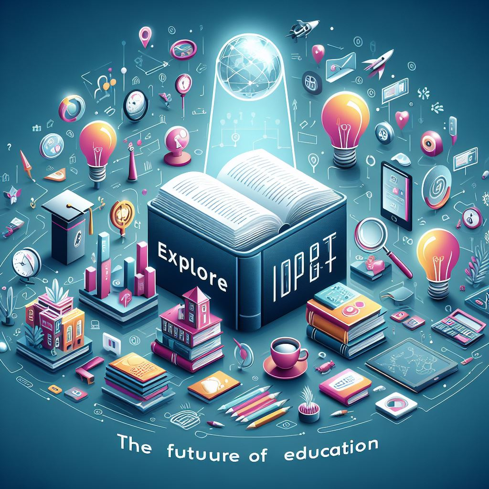
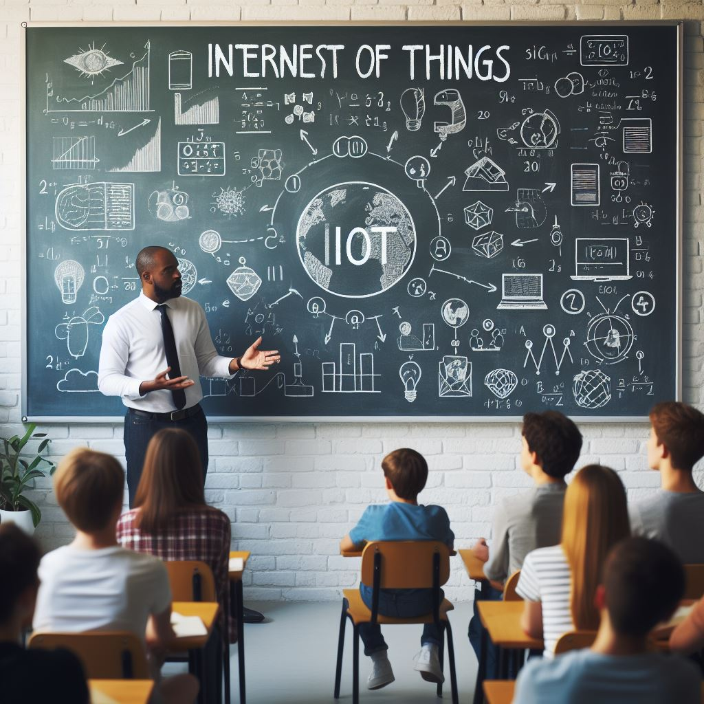
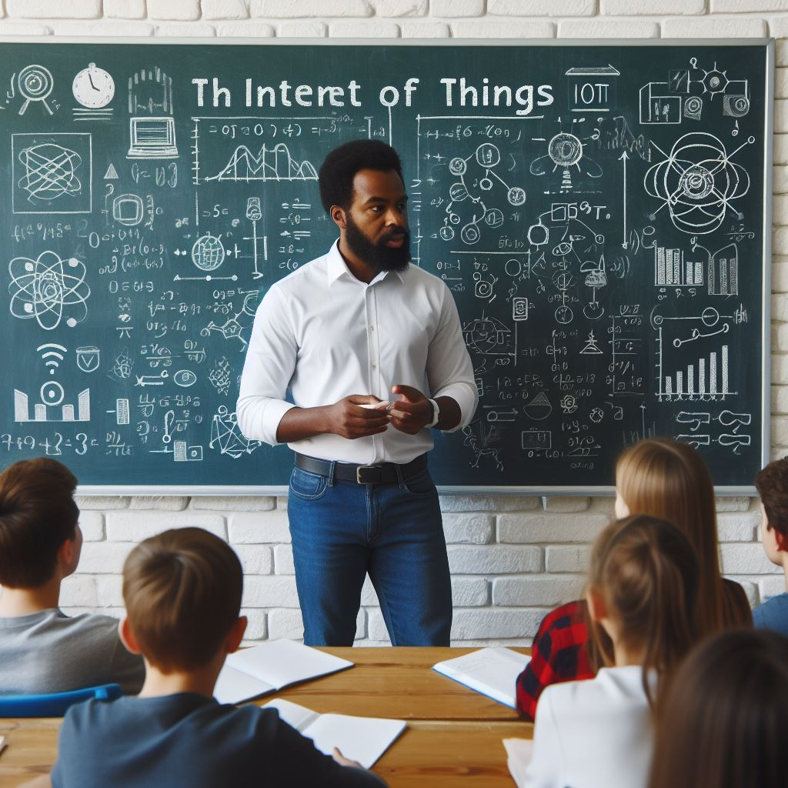

|
INTRODUCCION |
Bienvenido a la revolucion digital en el mundo educativo! En esta pagina, descubriras como la Internet de las Cosas (IoT) esta transformando la forma en que aprendemos y educamos. Desde aulas inteligentes hasta dispositivos conectados, IoT no solo hace que el aprendizaje sea emocionante, sino que tambien abre un mundo de posibilidades para personalizar tu experiencia educativa.
|
|
TAREA |
Proyecto "IoT Educativo: Transformando el Aprendizaje"
Descripcion de la Tarea:
Es hora de explorar el potencial de la Internet de las Cosas (IoT) en la educacion! En este proyecto, tendras la oportunidad de investigar y demostrar como IoT puede mejorar la experiencia de aprendizaje en el aula y mas alla.
Producto Final:
Deberas presentar un producto digital que muestre como la IoT puede ser utilizada de manera efectiva para transformar el proceso educativo. Puedes elegir entre las siguientes opciones:
1. Presentacion Multimedia: Crea una presentacion interactiva que destaque las aplicaciones de IoT en el ambito educativo, incluyendo ejemplos practicos y casos de estudio relevantes.
2. Sitio Web Educativo: Crea un sitio web educativo que explore diferentes aspectos de la IoT en la educacion, ofreciendo recursos y ejemplos concretos de su uso en el aula.
3. Exposicion Verbal: Prepara una exposicion oral donde expliques como la IoT esta impactando la forma en que aprendemos y educamos, utilizando ejemplos y datos relevantes.
4. Otra Propuesta Creativa: Si tienes alguna otra idea creativa para demostrar el impacto de la IoT en la educacion, no dudes en proponerla y discutirla con el profesor.
Recuerda que tu producto final debe ser innovador, informativo y mostrar un entendimiento profundo de como la IoT puede mejorar el aprendizaje y la instruccion en el entorno educativo. Diviertete explorando nuevas tecnologias para potenciar tu experiencia de aprendizaje!
|
|
PROCESO |
Proceso del Proyecto "IoT Educativo: Transformando el Aprendizaje"
1. Seleccion del Tema:
-En equipo, elijan un tema especifico dentro del ambito educativo en el cual aplicaran la IoT para mejorar la experiencia de aprendizaje.
2. Investigacion Inicial:
- Investiguen y recopilen informacion relevante sobre como la IoT esta siendo utilizada en la educacion, incluyendo casos de exito y tendencias actuales.
3.Planificacion del Producto Final:
-Discutan y planifiquen el tipo de producto digital que crearan (presentacion multimedia, sitio web, exposicion verbal u otra propuesta creativa) y definan los objetivos del proyecto.
4. Division de Tareas:
- Asignen roles y responsabilidades a cada miembro del equipo para llevar a cabo la investigacion, boceto y desarrollo del producto final.
5. Desarrollo del Producto:
- Trabajen en conjunto para desarrollar el producto digital, utilizando herramientas y recursos tecnologicos adecuados para implementar la IoT en el contexto educativo seleccionado.
6. Revision y Mejora:
- Revisen y mejoren el producto final asegurandose de que cumpla con los estandares de calidad y contenga informacion relevante y actualizada sobre la IoT en la educacion.
7. Prueba Piloto:
- Realicen una prueba piloto del producto digital para identificar posibles mejoras o ajustes necesarios antes de la presentacion final.
8. Presentacion Final:
- Presenten el producto final ante el grupo, explicando como la IoT fue aplicada de manera efectiva para transformar el aprendizaje en el tema seleccionado.
9. Evaluacion y Retroalimentacion:
- Reciban retroalimentacion del profesor y carabina sobre el proyecto, evaluando el impacto de la IoT en la innovacion educativa y la calidad del producto final.
10. Reflexion Personal:
- Reflexionen individualmente sobre su experiencia en el proyecto, destacando los aprendizajes adquiridos y los desafios enfrentados en la aplicacion de la IoT en la educacion.
Este proceso garantiza una experiencia de aprendizaje colaborativo y significativo, donde se fomenta la investigacion, la creatividad y la aplicacion practica de la IoT para mejorar el entorno educativo.
|
|
RECURSOS |

Aqui tienes el listado de recursos con sus respectivas direcciones web: EdTech Magazine - [https://edtechmagazine.com/](https://edtechmagazine.com/)
ISTE (International Society for Technology in Education) - [https://www.iste.org/](https://www.iste.org/)
EdSurge - [https://www.edsurge.com/](https://www.edsurge.com/)
TeachThought - [https://www.teachthought.com/](https://www.teachthought.com/)
Education Week - [https://www.edweek.org/](https://www.edweek.org/)
Estos recursos te proporcionaran una base solida para investigar y entender el impacto de la IoT en el ambito educativo, facilitando tu trabajo en el proyecto y evitando la perdida de tiempo en busquedas sin rumbo. Disfruta explorando nuevas tecnologias para mejorar el aprendizaje!
|
|
EVALUACION |

Evaluacion del Proyecto "IoT Educativo: Transformando el Aprendizaje
Objetivo de la Evaluacion:
Evaluar el entendimiento y la aplicacion de la Internet de las Cosas (IoT) en el ambito educativo, asi como la capacidad de investigacion, analisis critico y presentacion de resultados.
Criterios de Evaluacion:
Criterios de Evaluacion:
1. Comprension del Tema (30%):
- El estudiante demuestra comprension del concepto de IoT y su aplicacion en la educacion?
- Se identifican claramente las ventajas y desafios de implementar IoT en el ambito educativo?
2. Investigacion y Analisis (30%):
- La investigacion realizada sobre la IoT en la educacion es solida y fundamentada?
- El analisis de casos de estudio y ejemplos practicos demuestra una comprension profunda del tema?
3. Calidad del Producto Final (20%):
- El producto final (presentacion multimedia, sitio web, exposicion verbal u otra propuesta creativa) es innovador y bien desarrollado?
- El producto utiliza de manera efectiva la IoT para mejorar el aprendizaje en el contexto educativo seleccionado?
4. Presentacion y Comunicacion (15%):
- La presentacion final fue clara, organizada y persuasiva en la exposicion de los resultados?
- El estudiante utilizo adecuadamente el lenguaje verbal y no verbal para comunicar sus ideas?
5. Creatividad y Originalidad (5%):
-El estudiante mostro creatividad y originalidad en la aplicacion de la IoT en el proyecto?
Formato de Evaluacion:
La evaluacion se realizara utilizando una rubrica que incluira los criterios mencionados anteriormente, asignando puntajes especificos a cada uno de ellos. Ademas, se tomara en cuenta la retroalimentacion del profesor y la autoevaluacion del estudiante como parte del proceso de evaluacion continua.
|
|
CONCLUSION |
Conclusion: Descubriendo el Potencial de la IoT en la Educacion
Felicidades por completar el proyecto "IoT Educativo: Transformando el Aprendizaje" y por explorar el impacto que la Internet de las Cosas (IoT) puede tener en el ambito educativo. Durante esta experiencia, has descubierto como la tecnologia puede ser una aliada poderosa para mejorar el aprendizaje y la formacion en el siglo XXI.
Al reflexionar sobre tu trabajo, te animamos a considerar lo siguiente:
1. Innovacion Educativa: La IoT ofrece nuevas oportunidades para innovar en el proceso educativo, personalizar el aprendizaje y crear ambientes de aprendizaje mas interactivos y dinamicos.
2. Investigacion y Analisis: La investigacion y el analisis critico son fundamentales para comprender el impacto de la IoT en la educacion y aplicarla de manera efectiva en el aula.
3. Colaboracion y Comunicacion: El trabajo en equipo y la comunicacion efectiva son clave para desarrollar proyectos tecnologicos educativos exitosos y generar ideas creativas.
4. Vision Futurista: La IoT es parte de un panorama tecnologico en constante evolucion. Mantente actualizado y abierto a nuevas oportunidades para seguir transformando la educacion.
En resumen, este proyecto no solo te ha permitido explorar el potencial de la IoT en la educacion, sino que tambien te ha brindado habilidades valiosas para enfrentar los desafios del mundo digital. Sigue adelante con entusiasmo y continua siendo un agente de cambio en la educacion del futuro!
|
|
|

Haga
un listado de fuentes de las que haga uso en esta Webquest ya sean
imagenes, texto o sonido, proporcionando enlaces a la fuente
original. Exprese los agradecimientos a los proveedores de estos
recursos o de algun otro tipo de ayuda. Por
ejemplo:
-The WebQuest Page at San
Diego State University: http://webquest.sdsu.edu/
-Aula
Tecnol?gica Siglo XXI: www.aula21.net
-P?ginas
dispersas:
fresno.cnice.mecd.es/~avaler3
|